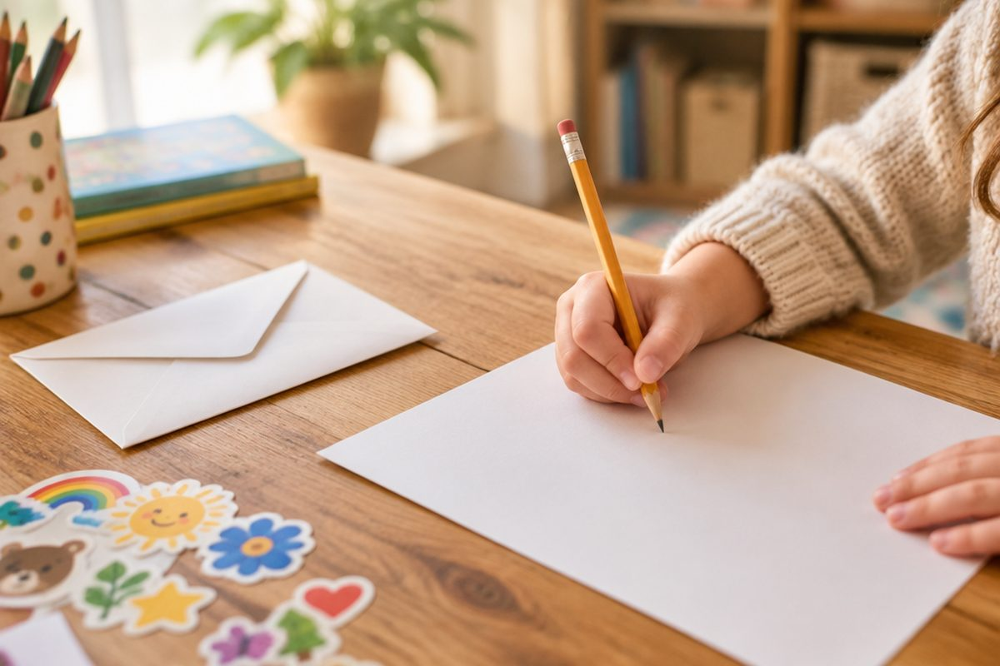

고마운 마음, 편지로 어떻게 전할까?

얼굴을 보고 “고마워.”라고 말하기 쑥스러울 때가 있지요? 그럴 때 편지를 쓰면 내 마음을 차분하고 진심 있게 전할 수 있어요.
편지로 전할 수 있는 마음
편지에는 여러 가지 마음을 담을 수 있어요. 도움을 받았을 때의 고마운 마음, 잘못했을 때의 미안한 마음, 좋은 일이 생겼을 때의 축하하는 마음, 힘든 일을 겪은 사람을 위로하는 마음이 있어요.
어떤 마음을 전할지 먼저 정하면 편지에 쓸 내용이 또렷해져요.
고마운 마음: 우산을 함께 써 준 친구에게 / 미안한 마음: 말다툼한 동생에게 / 축하하는 마음: 대회에서 상을 받은 형에게 / 위로하는 마음: 다리를 다친 친구에게
편지의 형식을 알아요
편지는 정해진 차례에 따라 써요. ① 받을 사람 ② 첫인사 ③ 전하고 싶은 말 ④ 끝인사 ⑤ 쓴 날짜 ⑥ 쓴 사람 순서예요.
쓴 사람을 적을 때 친구에게는 ‘○○가’나 ‘○○이가’, 웃어른께는 ‘○○ 올림’이나 ‘○○ 드림’이라고 써요.
① 사랑하는 할머니께 ② 할머니, 안녕하세요? 저 지호예요. ③ (전하고 싶은 말) ④ 할머니, 건강하세요. ⑤ 20○○년 5월 8일 ⑥ 손자 지호 올림
마음이 잘 드러나게 쓰는 방법
‘고마워’라는 말만 쓰기보다 어떤 일이 있었는지 구체적으로 쓰면 마음이 더 잘 전해져요. 그때 내 기분이 어땠는지도 함께 써 보세요.
받는 사람에 맞게 말을 골라야 해요. 웃어른께는 높임 표현을 쓰고, 친구에게는 다정한 말로 써요.
서연아, 고마워. ○ 서연아, 지난주 비 오는 날 우산을 같이 써 줘서 정말 고마워. 비에 젖을까 봐 걱정했는데 네 덕분에 마음이 따뜻해졌어.
다 쓴 뒤에는 다시 읽어요
편지를 다 쓰면 받는 사람이 되었다고 생각하고 소리 내어 읽어 보세요. 형식을 빠뜨리지 않았는지, 맞춤법이 틀린 곳은 없는지 살펴요.
편지를 받은 사람이 기분 좋게 읽을 수 있도록 글씨도 또박또박 써요.
확인할 것: 받을 사람·첫인사·끝인사·날짜·쓴 사람이 다 있나요? / 겪은 일과 내 마음이 드러나나요? / 높임 표현은 알맞나요?
핵심 낱말
- 첫인사
- 편지의 처음에 받는 사람에게 건네는 인사
- 끝인사
- 편지를 마무리하며 건네는 인사
- 올림
- 웃어른께 편지를 쓸 때 쓴 사람의 이름 뒤에 붙이는 말
- 위로
- 따뜻한 말이나 행동으로 괴로움이나 슬픔을 달래 줌
한 줄 정리
- 편지에는 고마움, 미안함, 축하, 위로 같은 마음을 담을 수 있어요.
- 편지는 받을 사람 → 첫인사 → 전하고 싶은 말 → 끝인사 → 쓴 날짜 → 쓴 사람 순서로 써요.
- 있었던 일과 그때의 마음을 구체적으로 쓰고, 받는 사람에 맞는 말을 골라 써요.
학교 교육과정 연결
- [4국03-04] 목적과 주제를 고려하여 독자에게 마음을 전하는 글을 쓴다.